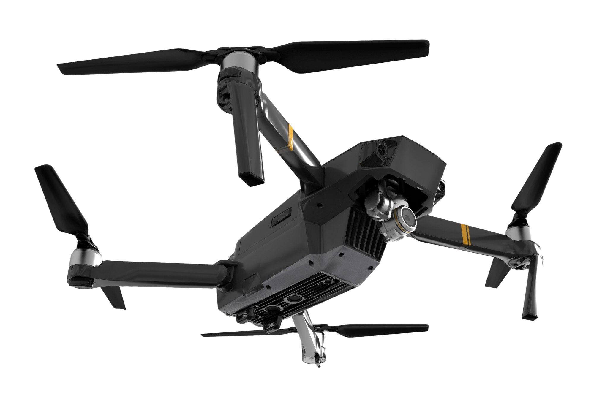

▶
PROJETO 01
PROJETO EMPRESARIAL
Filmagem aérea + FPV

ADILSON BENEDITO
FILMMAKER / DRONEMAKER FPV
Filmagens aéreas e FPV para transformar espaços, projetos e negócios em experiências visuais.

POR TRÁS DA CÂMERA.
FILMMAKER / DRONEMAKER FPV
Mais do que registrar um espaço, a ideia é encontrar o ângulo que faz ele ser percebido de outra forma.
Cada projeto é pensado como uma cena: com movimento, clareza visual e narrativa que transforma arquitetura, obra e marca em experiências memoráveis.
PROJETOS
Filmagem aérea + FPV
Filmagem aérea
Filmagem aérea + FPV
Filmagem aérea
Gostou de algum projeto?
CONVERSAR SOBRE MEU PROJETOCATEGORIAS
EXPERIÊNCIA FPV
Movimentos mais livres, ângulos impossíveis e uma perspectiva que coloca o espectador dentro da cena.


PROCESSO
Cada filme nasce de um processo pensado para transformar uma ideia em uma imagem que comunica.
Definimos rota, luz, ângulos e movimentos para valorizar o projeto.
O drone entra em ação para revelar novas perspectivas.
Selecionamos os melhores momentos, ritmo e narrativa.
Um vídeo pronto para apresentar e divulgar seu projeto.
SEU PROJETO
Vamos transformar seu projeto em uma experiência visual?
FALAR PELO WHATSAPP →